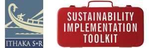

Other Resources

http://www.sr.ithaka.org/research-publications/sustainability-implementation-toolkit
Digital Humanities Questions & Answers
DH Toychest: Digital Humanities Resources for Project Building (curated by Alan Liu)
Consortiums and Special Interest Groups
TEI - Text Encoding Initiative
Managing Digital Projects
Project Management for Humanists
Ten Rules for Humanities Scholars New to Project Management
Evaluating Digital Projects
MLA Guidelines for Evaluating Works in DH and Digital Media
Job Accouncements or Descriptions at other Institutions
Digital Scholar Job Announcement - Whittier College
Professional Specialist/Digital Humanities Project Manager - Princeton (PDF version)
"Libraries hire digital humanities research designer," Penn State
Digital Humanities Project Director - UC Berkeley
Digital Scholarship Initiatives Coordinator - Cornell University Library
Digital Scholarship Unit Coordinator - University of Toronto
Library Digital Project Manager
Director, Center for Digital Scholarship and Publishing - Kansas State University
Digital Humanities Coordinator - CUNY
Head of Scholars' Lab - University of Virginia
Digital Humanities Specialist position at University of Alberta (PDF)
Clinical Faculty Position in Digital Humanities at NYU (PDF)
Digital Humanities Coordinator position at Columbia
Columbia news article on Alex Gil
Bucknell - Digital Humanities Coordinator
Diane Jakacki blog post on Digital Scholarship
Diane Jakacki blog post on Digital Scholarship Coordinator position at Bucknell University